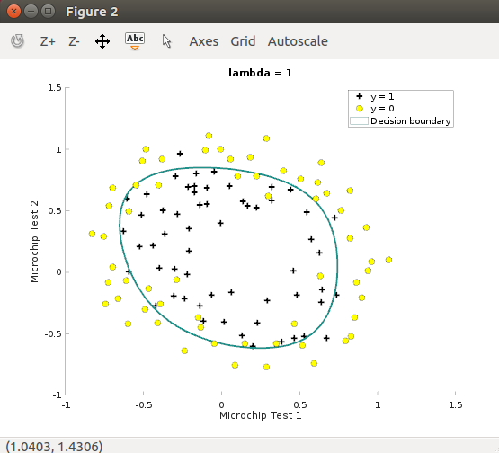

Logistic Regression is applied to two different datasets.
Table of ContentsBasic Understanding
Logistic Regression, Logit model is a regression model in which it is desired to learn mapping from Input Space to Output Space. I would like to image this mapping in following way:
There are tons of ways to describe an object, namely, ask yourself how would you like to describe a "CAR". As you see the link there are many different cars, namely, color, wheels, autonomous or not, brand etc. I would like you to think a space which is defined by those different features and call this space - Input Space -.
Now, If i tell you; blue, 4 wheels, Self-driving, Tesla, you would inherently think that those features describe a CAR, not a bike or plane or ship right? However, if I tell you, blue, 19234 wheels, empty, empty, you would no inherently think that those features describe a CAR.
Thinking about a CAR or a CAR defines the OutputSpace of CAR. Sounds like shakespearean right :)
Logistic Regression on Linearly Seperable Data
The logistic regression hypothesis defined as H_w(x) = g(W'Transpose x) where function g is the sigmoid function. After sigmoid function is implemented. Loss function is impelmented. Loss function returns the loss and gradient.

Fminunc is used to learn weights -W-.
After learning the parameters, the model can be used to predict whether a particular student will be admitted.
Regularized Logistic Regression
Regularized Logistic Regression is applied to the linearly unseperable data.

As Plot show that dataset cannot be seperated into positive and negative examples by a straight-line. Therefore, without 'modification' Logistic Regression will not perform wel on this dataset since Logistic Regression will only be able to find a linear decision boundary.
Feature Mapping
Feature mapping enables to expand the the dimensions of feature space,namely, creates more features, so that possibly better chance to fit model. The features are mapped into all polynomial terms of x_1 and x_2 up to the sixth power. In other words, we are able to describe an object not from 2 perspective but right now 28 different perspective.The vector of two features has been transfromed into a 28-dimensional vector. A logistic regression classifier trained on this higher-dimension feature vector will have a more complex decision boundary and will appear nonlinear when draw in our 2-dimensional plot.
Regularization parameter is chosen to be 1,Lambda=1

Be aware of Overfitting
Lambda=0